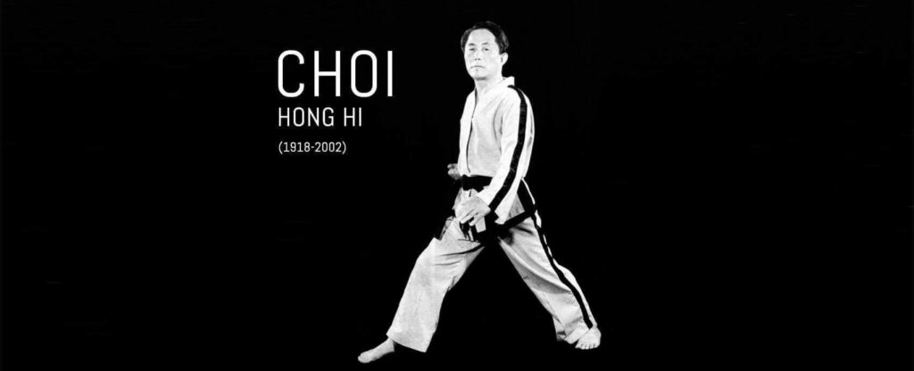
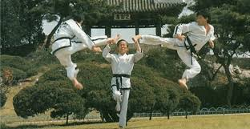
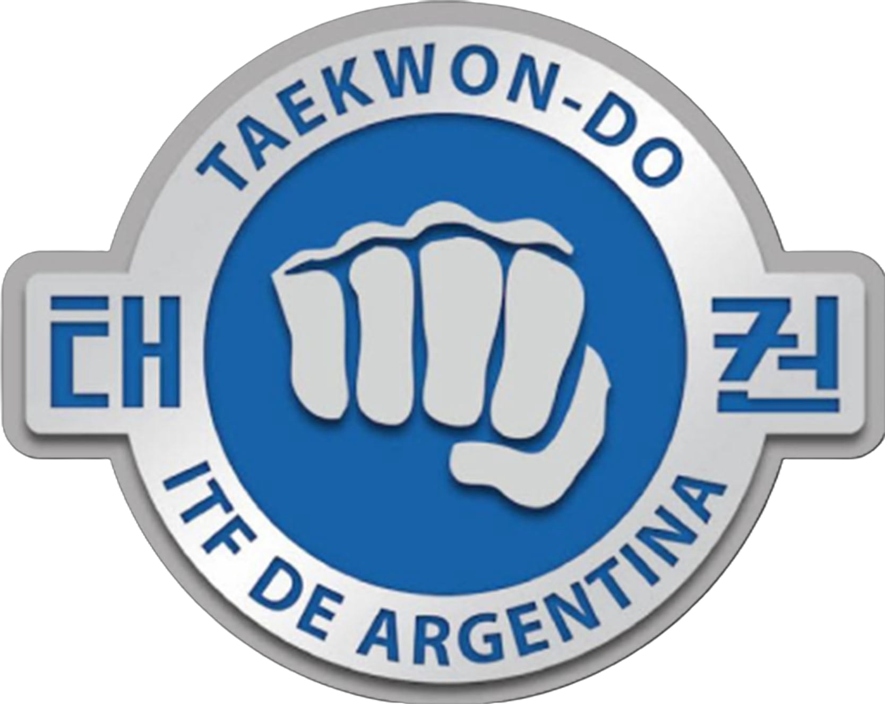

Sobre el creador del Taekwon-Do
El General Choi Hong Hi nació el 9 de noviembre de 1918 en la escarpada región de Hwa Dae, distrito de Myong Chun, en lo que hoy es la República Democrática Popular de Corea. De niño fue frágil y enfermizo, lo que preocupaba constantemente a sus padres.
A los doce años ya mostraba un carácter fuerte e independiente: fue expulsado del colegio por organizar protestas contra las autoridades japonesas que ocupaban Corea, iniciando así su relación con el Movimiento de Estudiantes Independentistas de Kwang Ju.
Tras la expulsión, su padre lo envió a estudiar caligrafía con el reconocido maestro Han Il Dong, quien además dominaba el antiguo arte de lucha coreano Tae Kyon. Preocupado por la débil salud de Choi, Han comenzó a enseñarle estos ejercicios para fortalecer su cuerpo.
En 1937 Choi viajó a Japón para continuar su educación. Poco antes de partir, una fuerte discusión con un luchador profesional —que llegó a amenazar con “desarmarlo parte por parte” si lo encontraba de nuevo— le dio un renovado impulso para perfeccionarse en artes marciales.
En Kioto conoció a un compatriota, Kim, que le enseñó karate japonés. Tras dos años de entrenamiento intensivo obtuvo el primer dan de cinturón negro. Estas técnicas, combinadas con el Tae Kyon, serían las precursoras del Taekwon-Do moderno.
Siguió su formación académica en escuelas preparatorias y en la universidad de Tokio, mientras profundizaba en la experimentación de nuevas técnicas de combate. Alcanzó el segundo dan y comenzó a enseñar karate en la YMCA de Tokio.
Choi recordaba que en esa época golpeaba o pateaba cada poste de luz que encontraba para comprobar si los cables de cobre vibraban, imaginando que así se preparaba para un eventual enfrentamiento con el luchador que lo había amenazado.
Con el inicio de la Segunda Guerra Mundial, fue forzado a enlistarse en el ejército japonés. Destinado en Pyongyang, Corea del Norte, se unió como organizador al Movimiento Coreano de Independencia, también llamado Movimiento de Soldados Estudiantes de Pyongyang, y finalmente fue arrestado y encarcelado por las autoridades japonesas, pasando ocho meses en prisión antes de ser procesado.
Consolidación militar y expansión del Taekwon-Do

En 1949, Choi fue ascendido a coronel y viajó por primera vez a Estados Unidos, donde asistió a la Ground General School de Fort Riley. Durante su estancia, comenzó a dar a conocer su arte entre el público estadounidense.
Su carrera militar continuó en rápido ascenso: en 1951 obtuvo el rango de brigadier general y organizó la Ground General School en Pusan, desempeñándose como comandante asistente y jefe del departamento académico. Al año siguiente fue nombrado jefe del Primer Cuerpo, con la responsabilidad de coordinar los viajes del general MacArthur durante sus visitas a Kang Nung. Durante el armisticio, Choi asumió el mando de la Quinta División de Infantería.
El año 1953 resultó decisivo tanto para su carrera como para el desarrollo del nuevo arte marcial. Publicó el primer libro autorizado de inteligencia militar en Corea, organizó y activó la 29.ª División de Infantería en la isla de Cheju, que se transformó en un centro clave de difusión del Taekwon-Do dentro del ejército, y fundó el Oh Do Kwan (“Gimnasio de Mi Camino”). Allí formó a los futuros instructores de todo el ejército y continuó perfeccionando las técnicas derivadas del Tae Kyon y la Ceremonia, sentando las bases del Taekwon-Do moderno.
Sobre la creacion del Taekwon-Do
Además de su conocimiento previo de Taek Kyon, tuvo la oportunidad de aprender Karate en Japón durante los 36 años de ocupación japonesa de Corea. Poco después de la liberación del país en 1945, se encontró en la posición privilegiada de ser miembro fundador de las recién formadas Fuerzas Armadas de Corea del Sur.
Pasó un tiempo en una prisión militar japonesa. En enero de 1946 recibió el grado de subteniente en la recién nacida República de Corea y fue destinado al 4.º regimiento de infantería de Kwangju, en la provincia de Cholla del Sur, como comandante de compañía.
Comenzó a enseñar Karate a sus soldados como medio de entrenamiento físico y mental. Entonces comprendió que era necesario desarrollar un arte marcial nacional, superior en espíritu y técnica al Karate japonés. Estaba firmemente convencido de que difundirlo por todo el país le permitiría cumplir la promesa que había hecho a sus tres compañeros que compartieron su encarcelamiento a manos de los japoneses.
Con esa ambición comenzó a desarrollar nuevas técnicas de forma sistemática a partir de marzo de ese mismo año. Hacia finales de 1954 casi había terminado de fundar un nuevo arte marcial para Corea, y el 11 de abril de 1955 este arte recibió el nombre de «Taekwon-Do».
Aclara que, aunque el Karate y el Taek Kyon fueron utilizados como referencia durante su estudio, las teorías y principios fundamentales del Taekwon-Do son totalmente distintos de los de otras artes marciales del mundo. En marzo de 1959 llevó a un equipo militar a dar una demostración de Taekwon-Do en el extranjero, visitando Vietnam del Sur y Taiwán. Fue el primer viaje de este tipo en la historia de Corea. En esa ocasión reiteró su resolución de dejar su legado personal al mundo bajo la forma del Taekwon-Do y formuló los siguientes ideales básicos para los practicantes:
1) Desarrolla una mente recta y un cuerpo fuerte, para darte la confianza, para estar siempre del lado de la justicia
2) Debemos unirnos con todos los hombres en una hermandad de sangre sin importarnos la religión, raza, nacionalidad o fronteras ideológicas.
3) Debemos dedicarnos a construir una pacífica sociedad donde la justicia, moralidad, la honestidad y el humanismo prevalezcan.

Nacimiento oficial del Taekwon-Do
En 1954, Choi trabajó junto a su mano derecha, Nam Tae Hi, para transformar las bases del Karate en un sistema moderno que daría origen al Taekwon-Do.
A finales de ese mismo año asumió el mando del Chong Do Kwan (“Gimnasio de la Onda Azul”), el centro civil de entrenamiento más grande de Corea, y fue ascendido a general mayor.
El año 1955 marcó un momento histórico: se conformó un comité especial integrado por destacados instructores, historiadores y personalidades de la sociedad, con el objetivo de unificar y dar nombre oficial al nuevo arte marcial.
Tras considerar numerosas propuestas, el 11 de abril de 1955 el comité, convocado por el propio Choi, adoptó el nombre Taekwon-Do, sugerido por él. Con esta decisión, un solo término reemplazó a los diversos y confusos nombres que coexistían hasta entonces, como Dang Soo, Gong Soo, Taek Kyon y Kwon Bup, estableciendo la identidad formal del arte marcial de Corea.

Fechas
En el año 1954 (un año antes de que se funde el Taekwon-Do) nace el hijo del General Choi, el actual Gran Maestro y director de la ITF, Choi Jung Hwa.
La ITF (International Taekwon-Do Federation)se fundo en el año 1966 para promover y y fomentar el crecimiento del arte marcial.
En el año 1967 el Taekwon-Do es traido a la Argentina por Kim Han Chang, Choi Nam Sung y Chung Kwang Duk.
El 15 de junio del año 2002 lamentablemente fallece el general Choi Hong Hi
ATU/FATU
FITFA
Si les interesa seguir investigando, les dejamos las enciclopedias, tanto en español como en inglés.